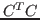

We present an efficient algorithm for computing a few extreme (largest
and smallest) singular values and corresponding singular vectors of a
large sparse  matrix
. Our algorithm is based on
reformulation of the singular value problem as an eigenvalue problem for
matrix
. Our algorithm is based on
reformulation of the singular value problem as an eigenvalue problem for

and, to address the clustering of singular values, we use an inverse-free preconditioned Krylov subspace method to accelerate convergence. We consider preconditioning that is based on robust incomplete factorizations and we discuss various implementation issues such as deflations. Numerical tests will be presented to demonstrate efficiency and robustness of the new algorithm.